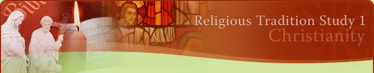

Summary Points
Students learn about:
The divinity and humanity of Jesus Christ
Students learn to:
Outline the principal beliefs regarding the divinity and humanity of Jesus Christ
- The Christological controversies of the fourth and fifth centuries were debates regarding the nature of Christ, and in particular the issue of his humanity versus his divinity
- Docetism is a position which undermines the integrity of the humanity of Jesus because it claims that Jesus is fully divine but not truly human, because he is God merely adopting the appearance of being human
- Arianism is the belief that Jesus is superior to the rest of creation but not equal to God because Jesus was created by God and thus is not eternal unlike God
- The Council of Nicaea in 325 was called to fight against Arianism. The Council developed the Nicene Creed which stats that the Father and the Son are of one essence and hence Jesus is fully divine. The Council of Constantinople reaffirmed this decision
- Nestorius undermined the unity of Jesus by claiming that Mary was the Mother of the human Jesus but not the divine Jesus, to suggest that there were two persons within Jesus
- The Council of Ephesus in 431 CE rejected this view and confirmed the notion that there was only one person in Jesus and therefore Mary could rightfully be called the Mother of God (theokotos)
Students learn about:
The death and resurrection of Jesus Christ
Students learn to:
Explain the importance of the death and resurrection of Jesus Christ for Christians
- Christians have traditionally believed that Jesus died for our sins
- This belief has given rise to some questionable explanations like the idea that God would be appeased with the execution of an innocent person
- Other questionable inferences include the idea that Jesus became human simply for him to be sacrificed because he is the only person of sufficient value to pay a ransom to God or Satan
- More adequate reflections on the death of Jesus highlight the notion that death is an integral part of the human condition and one which is shared by Jesus
- Other ways of appreciating the importance of the death of Jesus include seeing the death of Jesus as evidence of the unconditional love of God, or seeing Jesus' selflessness even unto death as a model for discipleship
- The fundamental Christian belief in the resurrection of the body, as evident in the Nicene Creed is based on the resurrection of Jesus Christ
- Whilst Jesus' resurrection and ascension are depicted slightly differently in the Gospels of John and Luke, both stress the importance of the resurrection as carrying the meaning of eternal life that overcomes the limitations of human mortality
- Theologians have long debated the nature of the risen Jesus. The difficulty is reconciling the physical resurrection with the spiritual resurrection, without downplaying either aspect
Students learn about:
The nature of God and the Trinity
Students learn to:
Outline the beliefs about the nature of God and the Trinity
- The doctrine of the Trinity states that God is One existing as three persons, God the Father, Jesus the Son and the Holy Spirit as sanctifier
- The belief in the trinity is a central tenet of Christian belief
- God's promise of salvation has been fulfilled through the life, death and resurrection of Jesus and the outpouring of the Holy Spirit, thus God is revealed as trinity
- God the Father is revealed in the Hebrew Scriptures
- God the Son is revealed in the Christian Scriptures
- God the Spirit is revealed in the Church
- The Trinitarian doctrine states that there are three co-eternal, equal persons in God, which is the notion of unity within community
- The Trinitarian doctrine was further developed and defined at the councils of Nicaea in 325 CE and Constantinople in 381 CE
- God was always trinity, however gradually this reality became known through revelation
- Jesus calls God "abba" (Father) and speaks of the spirit which indicates a plurality in God
- Early Christian practice indicates liturgical/baptismal use of the formula "In the name of the Father, Son and Holy Spirit"
- The difficulty is reconciling the concept of monotheism with the notion of God existing as three persons
- Cappadocian theology taught that God was of one essence (ousia) but three persons (hypostaseis)
- The divine essence is common to all three, however the three persons have attributes or properties which distinguished them eg Fatherhood, sonship and sanctifying power
- Once essence means that the actions (creation, redemption, sanctification) are attributable to all
- Mutual relations is the concept that the terms Father and Son are not titles but expressions of a relationship and thus all three persons are co-equal
Students learn about:
Revelation
Students learn to:
Examine the Christian understanding of Revelation
- God is intimately involved with all aspects of human life and thus God is revealed to humankind in and through the experiences of human history
- The revelation is understood to be an ongoing process
- God is the only source of revelation
- God's revelation takes place through a number of vehicles
- One vehicle is God's Spirit that dwells within human beings which enlivens the faith of Christians by bringing to them a knowledge of God
- The revelation is also communicated through the Bible, which Christians believe is inspired by God
- Similarly, the teaching tradition of the Church is believed to have been inspired by the Holy Spirit
- Even though all Christian groups believe that the Bible is the normative text, they understand this inspiration in different ways
- In comparison with Protestant denominations, Orthodox and Catholic denominations place a greater emphasis on the teaching authority of the Church, which is seen to be adjunct with the sacred scripture in communicating the revelation
Students learn about:
Salvation
Students learn to:
Describe the Christian understanding of salvation.
- Essentially, Christians believe that salvation is a gift from God, that is offered through the death and resurrection of Jesus
- This gift is accessed through faith in Jesus
- The Christian understanding of salvation draws heavily from the Jewish tradition of Moses and the Exodus, where the Hebrew people are liberated from slavery due to the saving intervention of God
- From this, the Hebrew prophetic tradition calls the people of Israel to be faithful to their covenantal relationship with God
- In particular the prophets remind the people of their obligation to care for the anawim who are the poor and defenceless members of society
- In his own preaching, Jesus' association with the Hebrew prophetic tradition is clear in his emphatic identification of himself as the fulfilment of the promise of salvation
- The major aspects of the Christian belief regarding salvation are as follows: Firstly God is the one who saves, secondly God's saving action is liberating and has a particular concern for those who are the most vulnerable in society. Thirdly that Jesus in his life and ministry embodies the saving action of God. Finally that Christians are called to accept the gift of God's saving action through their faith in Jesus and their own actions on behalf of those in need
- There is a considerable difference in the understanding of salvation among Christian groups. "Born again" Christians believe that salvation is solely dependant on an individual's personal acceptance of Jesus Christ as Lord and Saviour in a moment of personal conversion
- On the other hand, other Christians believe that the key indicator to salvation is not personal faith but works of merit, especially in the way a person has treated the most vulnerable people in society
- In between these views lies the understanding that the requirement is a sincere faith which is enlivened with good works